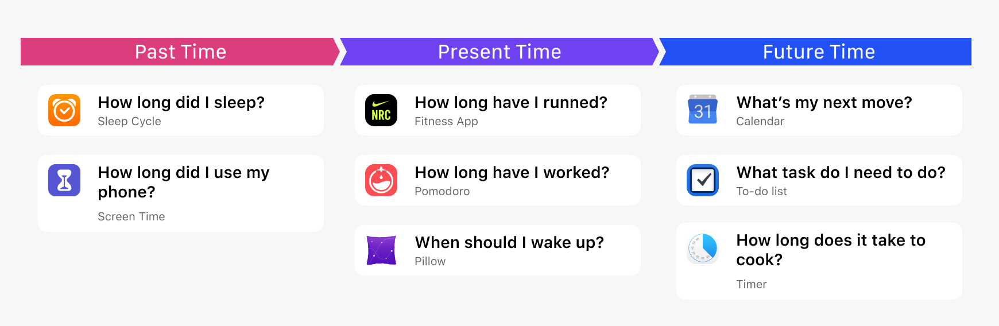
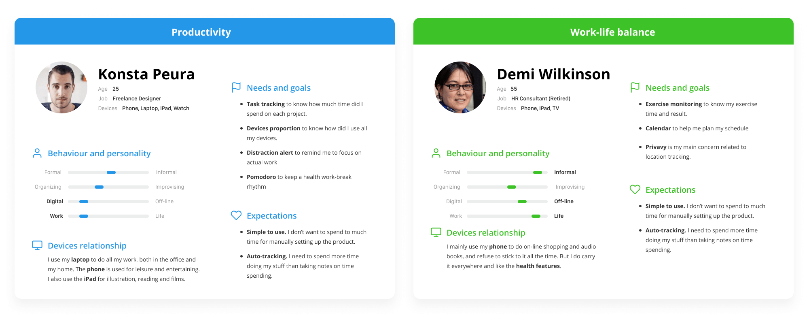

Home and Settings
The home screen shows all the reviews and the current event. The users could adjust events in settings. The app would also turn to the dark mode in the sleeping event.
“Quantified-self” means to track daily lives with proficient and available technology to develop self-knowledge, and improve productivity, health, and work-life balance. However, it is based on continuous time-logging that requires extreme perseverance.
This project brings the idea of mapping out the entire daily routine by encapsulating data from other apps. It builds a hub for quantified-self and gives inspiring reviews for us automatically.

I was first fascinated by the features of smartwatches. But all of them just don’t add up to formulate a whole purpose and makes smartwatches still alternative devices.
Reconsidering the most used apps on my watch, I realized that exercise, to-do list, sleep monitor is all related to how I spend my time, in other words, my daily routine.

The Russian Scientist Alexander Lyubishchev had invented his time-counting system and practised for 56 years with paper and pencil. His biography tells us the benefits and methodology to get a clear perception of time-spending.
I tried to apply Lyubishchev’s method and illustrated daily routines for my friends and me. It was refreshing to sit down with the interviewees and review their timeline.

Timeline unveils user patterns. Users often overrate working hours and underestimate leisure time. Reviewing the graph exposed indiscoverable patterns like distractions on work.
Digital devices cover most of our time. Even some older user who doesn’t use computers could use the location data to recall events accurately.
Manually time-tracking is painful. The user would quickly feel frustrated once they forget to log.
Natural language is better than timestamps. Some software provided complex, unorganized data. But we prefer to describe an event in a semantics sentence.
I first conducted a competitive audit to lay out all kinds of data available in other time-tracking apps.

Previous research shows how people described their time-spending. I came up with the idea of defining a behaviour with a start, process and end with different activities. There are three layers in this system: Events, Behaviours, and Activities.


Quantified-self is not completed without valuable review and feedback. I designed “highlights” to automatically present information on productivity, sleep, fitness, distractions, and memorable moments.

The home screen shows all the reviews and the current event. The users could adjust events in settings. The app would also turn to the dark mode in the sleeping event.

They get data from apps of Pomodoro, calendar, exercise and health monitor. It is designed to use simple words and sentences to describe the key insights and provide charts on the detailed view. The users could set goals and track their status.
It captures groups of photos or videos taken in a day and chronologically displays them or create a visual routine of your highlights. This revives the mental model of how people recall their events in the interview.

This is a direct and straightforward approach to all the activities. Power users could also tap for more details in each section. It also shows people how the data from other apps were used.
As for “how we read the time on a smartwatch”, I designed the watch face that shows current time and task. Timeline is also available to see previous events of the day.
1. Design for online-offline balance. This project enables me to take a deep dive into how people interact with their devices. Meanwhile, the tech giants are announcing “screen time monitor” everywhere. I took my first exploration and practice on the design for unplugging.
2. A review is just as significant as planning. While we all take notes on tasks in advanced, we often forget about reflection. An inspection improves us and gives insights.